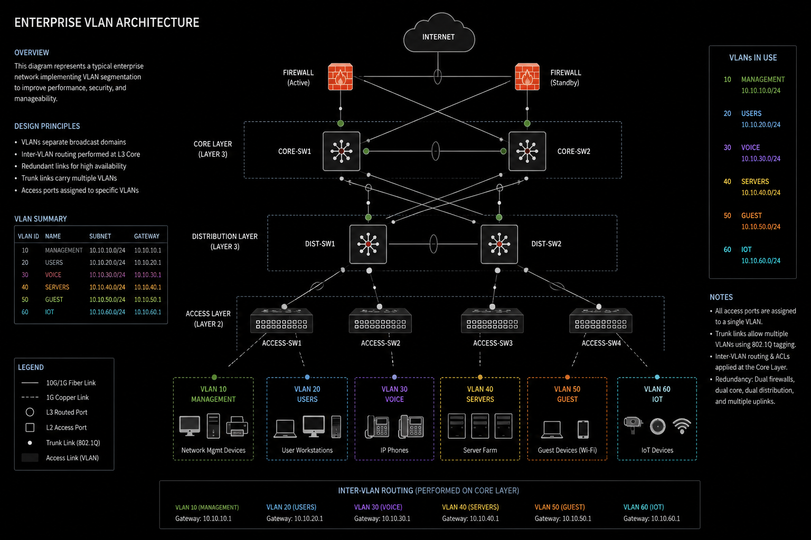
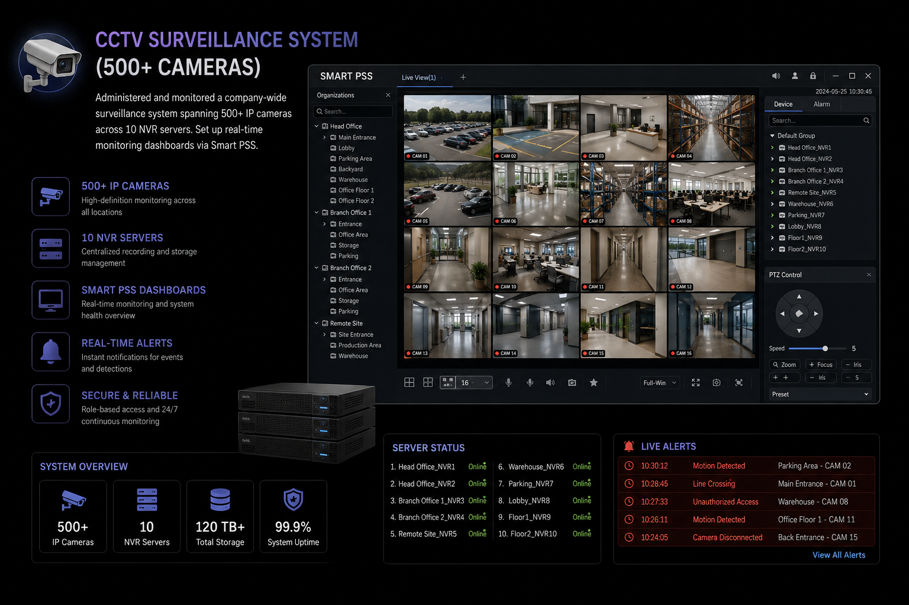
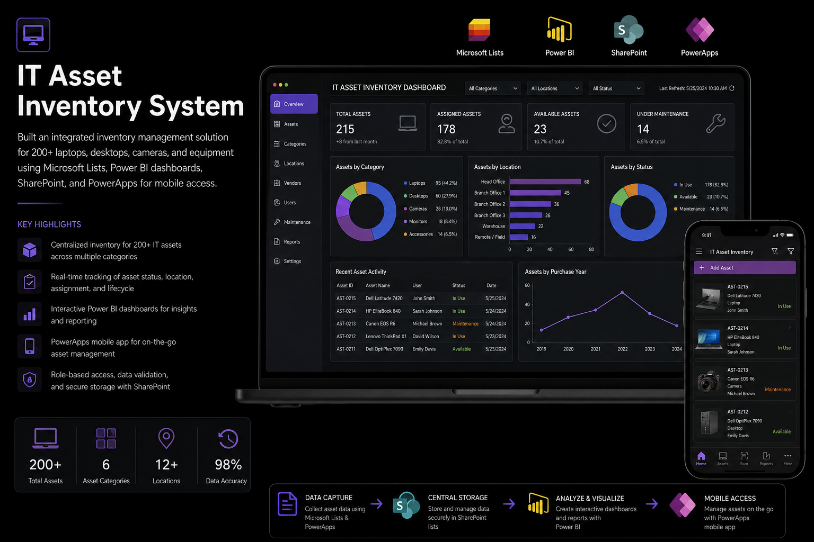
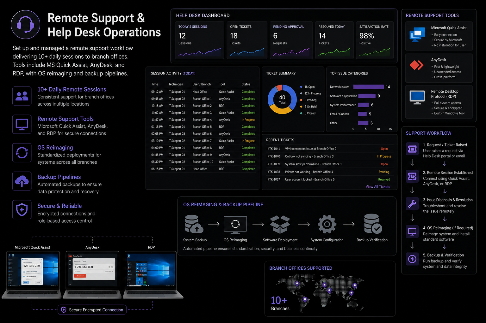

What I've Built
Infrastructure deployments, IT systems, and development work from my professional career.

Designed and deployed VLAN-segmented network infrastructure for a multi-branch agricultural company. Configured Cisco, Aruba, and Huawei switches to segment departments, improving security and performance.

Administered and monitored a company-wide surveillance system spanning 500+ IP cameras across 10 NVR servers. Set up real-time monitoring dashboards via Smart PSS.

Built an integrated inventory management solution for 200+ laptops, desktops, cameras, and equipment using Microsoft Lists, Power BI dashboards, SharePoint, and PowerApps for mobile access.

Set up and managed a remote support workflow delivering 10+ daily sessions to branch offices. Tools include MS Quick Assist, AnyDesk, and RDP, with OS reimaging and backup pipelines.